暖棕鼹鼠 · 杏橙与陶土 · 哑光公仔质感
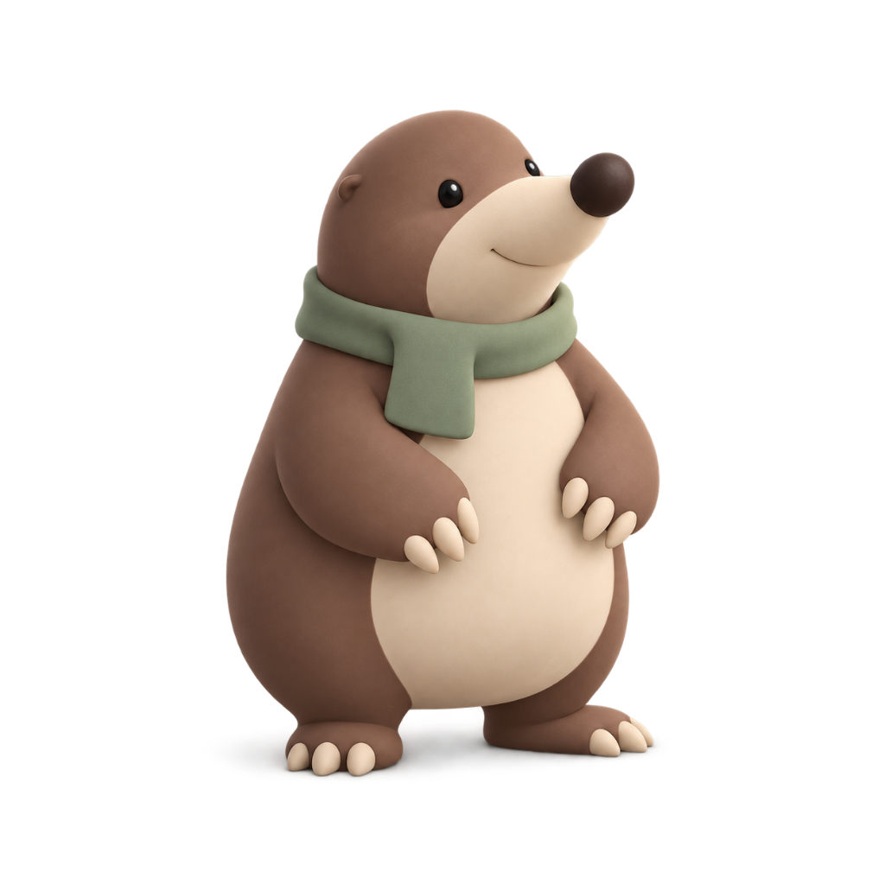
长鼻 · 铲形前爪 · 鼠尾草绿围巾
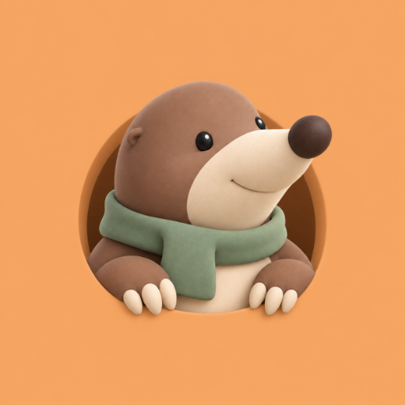
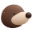
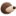
应用图标 / 圆形裁切 / 品牌 / favicon
浅色用米白与陶土橙，深色用咖啡灰与杏橙。主要操作清晰，状态保留各自含义。
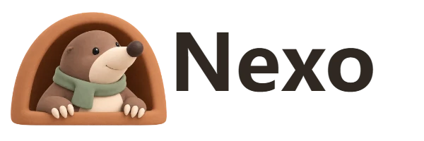
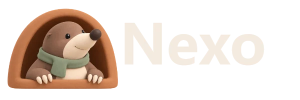
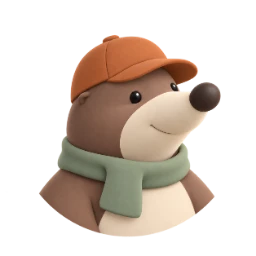
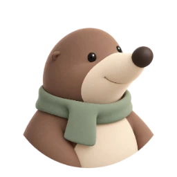
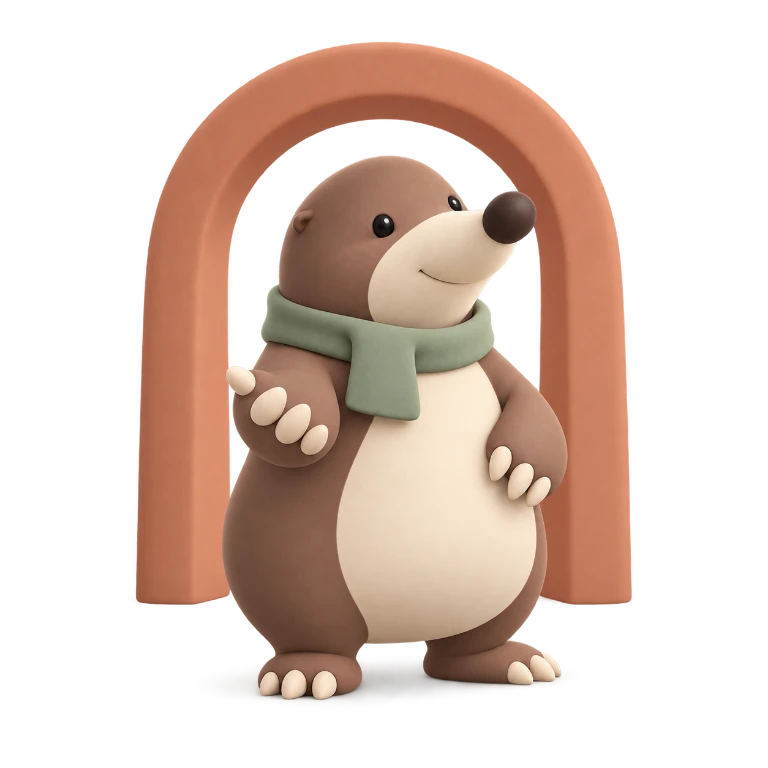
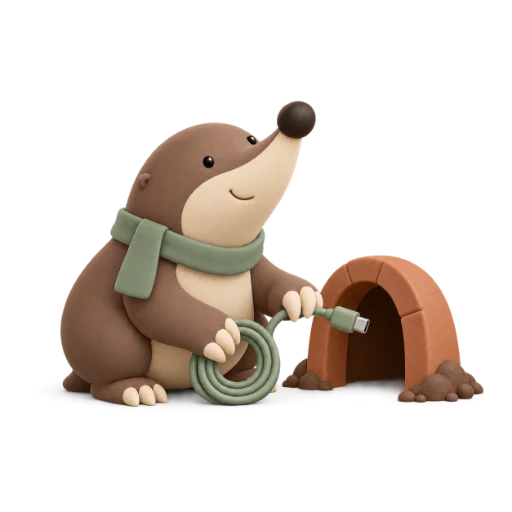
先接入 Agent，再创建服务。
服务 · 准备第一条连接
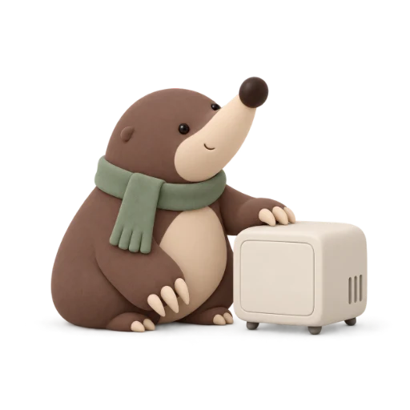
Agent · 等待设备加入
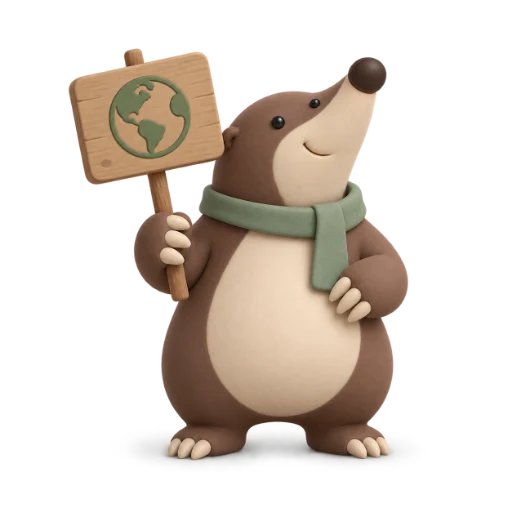
域名 · 建立访问入口
会话 · 暂无活动记录
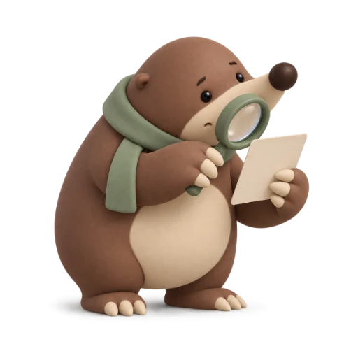
搜索 · 换个条件试试
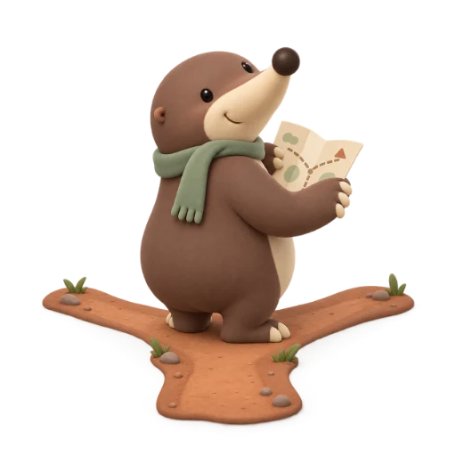
不存在 · 回到列表继续
此页为设计展示板。实际界面截图见验收记录；页面文案和操作以产品现有逻辑为准。